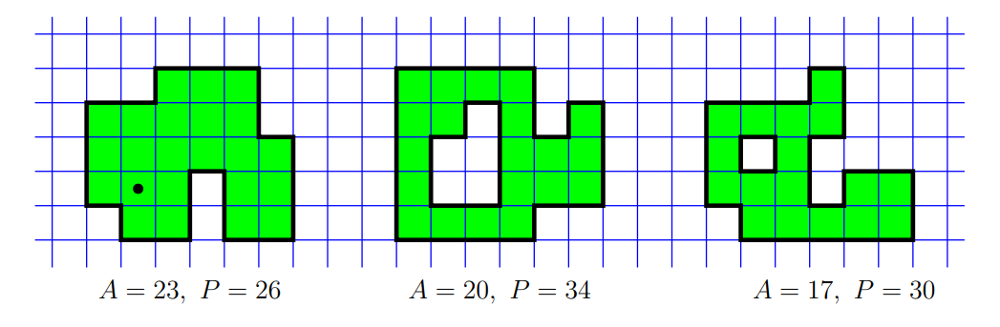

Una fortezza è un insieme finito di caselle in una griglia quadrata infinita, con la proprietà che da ogni casella si può raggiungere ogni altra casella muovendosi sempre tra caselle con un lato in comune. I muri della fortezza sono i segmenti unitari della griglia che separano un quadrato della fortezza da un quadrato non appartenente alla fortezza. L'area \(A\) di una fortezza è il numero di quadrati che la compongono. Il perimetro \(P\) di una fortezza è la lunghezza totale dei suoi muri. Nella figura sottostante sono rappresentate tre possibili fortezze, con i relativi valori di area e perimetro.

Alcune caselle della fortezza possono contenere una guardia, che sorveglia tutte le caselle che si trovano sopra, sotto, a destra o a sinistra della sua posizione, senza muri in mezzo (ogni guardia sorveglia anche la casella in cui si trova). Ad esempio, una guardia posta nella casella con il puntino della prima fortezza sorveglia sei caselle, compresa quella in cui si trova.